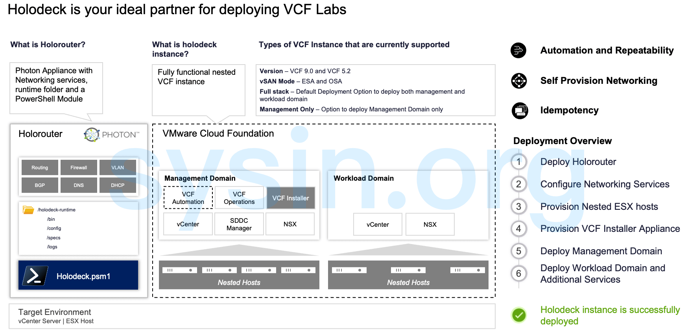
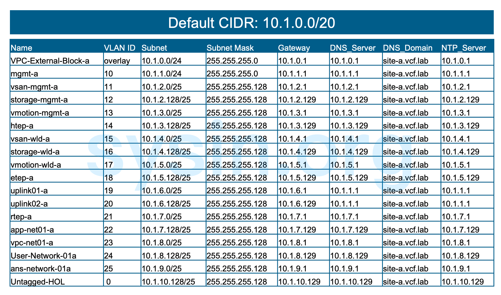

请访问原文链接：VMware Holodeck 9.1 - 自动化部署 VCF 和 VVF 实验环境 查看最新版。原创作品，转载请保留出处。
作者主页：sysin.org
Holodeck
什么是 Holodeck？
Holodeck 是一个工具包，旨在提供一种标准化、自动化的方法，用于在 VMware ESX 主机或 vSphere 集群上部署嵌套的 VMware Cloud Foundation (VCF) 环境。这些环境非常适合数据中心内的多个团队进行技术能力测试，帮助他们通过实践演示 VCF 的功能 (sysin)，以交付由客户管理的 VMware 私有云。
Holodeck 仅限用于测试和培训环境；它非常适合想深入了解 VCF 在各种用例和功能下如何运作的用户。当前完整支持的版本矩阵如下：
- VCF 9.1.0.0 和 VVF 9.1.0.0
- VCF 9.0.x 系列（9.0.0.0 - 9.0.2.0）
- VCF 5.2.x 系列（5.2 - 5.2.4）

Holodeck 的优势
虽然部署嵌套 VCF 环境的方法有很多，但这通常耗时且需要特定设置以确保最佳体验。这正是 Holodeck 发挥作用的地方。它帮助解决以下问题：
- 减少硬件需求：在物理环境中运行时，VCF 管理域需要四个 vSAN Ready Node，并需额外主机以添加集群或工作负载域。在嵌套环境中，这 4 至 8 个主机可轻松虚拟化并运行于单台 ESX 主机或 vSphere 集群上。
- 自包含服务：Holodeck 自带常见的基础架构服务（如 NTP、DNS、AD、证书服务和 DHCP），测试时无需依赖数据中心提供的服务。每个环境仅需一个外部 IP。
- 网络隔离：Holodeck 消除了在测试早期阶段配置 VLAN 和 BGP 连接的需要 (sysin)。
- 环境间隔离：每个 Holodeck 部署均完全自包含，避免与现有网络配置冲突，可同时部署多个嵌套环境而无需担心重叠。
- 单台 ESX 主机即可运行多个 VCF 部署（前提是资源足够）：典型的 VCF 标准架构（4 节点管理域 + 3 节点工作负载域）在 VCF 9.0 中约需 24 个 CPU 核心、325GB 内存和 1.1TB 磁盘空间。
- 自动化与可重复性：嵌套 VCF 环境的部署几乎完全自动化，且可轻松重复执行。
Holodeck 环境概览
每个 Holodeck 环境包含以下组件：
✅ VCF 9.0
- 一台 Holorouter 虚拟设备（基于 Photon OS），内置 DNS、DHCP、NTP、代理、动态路由（BGP）、L2 交换及可选的 Webtop（虚拟桌面）功能
- 支持 VCF 与 VVF 部署
- 支持 vSAN ESA 与 OSA
- 支持在线与离线软件仓库（通过代理用于 VCF Installer）
- 管理域部署 4 台嵌套主机（vSAN Ready Node），包含 VCF Installer、VMware vCenter、VMware NSX、VCF Operations、VMware SDDC Manager、VCF Automation（可选）
- 可选工作负载域，包含 3 台嵌套主机（vSAN Ready Node），包括 VMware vCenter、VMware NSX 和 Supervisor（可选）
- 可选的 NSX Edge Cluster，可部署在管理域和/或工作负载域中
- 可在管理域中部署一个或多个额外的三节点 vSphere 集群
- 支持仅预配模式（部署 VCF Installer 与 ESX 主机，以模拟全新部署体验）
- 支持自定义 Holodeck 网络的 CIDR
- 支持自定义 Holodeck 网络的 VLAN
- 支持自定义 Holodeck 环境的 DNS 域
✅ VCF 5.2
- 一台 Holorouter 虚拟设备（基于 Photon OS），内置 DNS、DHCP、NTP、代理、动态路由（BGP）、L2 交换及可选 Webtop（虚拟桌面）功能
- 仅支持 VCF 部署
- 仅支持 vSAN OSA
- 管理域部署 4 台嵌套主机（vSAN Ready Node），包含 VMware Cloud Builder、VMware vCenter、VMware NSX、VMware SDDC-Manager
- 可选工作负载域，包含 3 台嵌套主机（vSAN Ready Node），包括 VMware vCenter 与 VMware NSX
- 可选 NSX Edge Cluster，可部署在管理域和/或工作负载域中
- 可在管理域中部署一个或多个额外的三节点 vSphere 集群
- 支持自定义 Holodeck 网络的 CIDR
- 支持自定义 Holodeck 网络的 VLAN
- 支持自定义 Holodeck 环境的 DNS 域
Holodeck 9.0 支持 VCF 5.2 与 9.0 的嵌套部署，可基于资源情况部署在单台独立 ESX 主机或 vSphere 集群上。
Holodeck 9.0 支持状态：
Holodeck 9.0 并非 VMware 官方支持产品，性质类似 Fling，仅供测试与培训使用。
Holodeck 9.0 采用 PowerShell 与 VMware PowerCLI 开发，所有必需内容均打包在名为 Holodeck 的 PowerShell 模块中。该模块已内置于我们提供的 OVA 映像（Holorouter）中。
每个 Holodeck 环境均运行相同的嵌套配置，可部署为单站点或双站点架构。环境及站点间的隔离由 VMware vSphere Standard Switch (vSS) 或 VMware vSphere Distributed Switch (vDS) 管理。每个 Holodeck Pod 在 vSS/vDS 上拥有唯一的端口组（每站点一个）。每个端口组配置为 VLAN Trunk，以支持通信。端口组上的组件使用 VLAN 标签以隔离嵌套 VLAN 间的通信。这样无需在物理 ESX 主机上配置 VLAN 即可支持嵌套实验室 (sysin)。若有条件，也可使用 NSX Overlay Segment 代替 vSS/vDS 端口组。
Holorouter 概述
HoloRouter 是 Holodeck 的基础架构核心，提供三层路由、防火墙、DHCP、DNS、NTP、BGP、代理、任务调度等服务。它负责将嵌套 VCF 环境连接至外部网络，同时在嵌套环境内部实现各网络的互联。若未使用自定义 VLAN：
- Site-a 使用 VLAN 0、10~25
- Site-b 使用 VLAN 40~58
HoloRouter 内置 Webtop（桌面界面），用户可通过 GUI 访问 HoloRouter，从而方便地操作嵌套 VCF 环境。
服务范围：
- DNS：为 Site-a 与 Site-b 提供本地 DNS 转发
- DHCP：为 Site-a 与 Site-b 提供本地 DHCP
- NTP：为 Site-a 与 Site-b 提供本地时间同步
- L3 路由：在 Site-a 与 Site-b VLAN 间提供路由
- 防火墙：控制外部网络与内部网络间的通信
- BGP：与 NSX Tier-0 网关建立对等关系，实现 Overlay 网络外联
- 代理：控制嵌套 VCF 环境的出站访问
- 任务调度：允许定时运行命令或脚本
- Webtop：提供 GUI 访问 Holorouter 与嵌套 VCF
- PowerShell + VMware PowerCLI 及相关模块：提供 Holodeck 操作接口
- 所有部署与运行 Holodeck 所需的软件包
核心概念
- 集中式配置：Holodeck 9.0 基于集中配置文件概念设计，该 JSON 文件是嵌套 VCF 部署的“单一事实源”。用户无需直接编辑此文件，PowerShell Cmdlet 会帮助创建、编辑或导入配置。默认模板存储在
/holodeck-runtime/templates/config.json，当使用New-HoloDeckConfigCmdlet 创建新配置时，会在/holodeck-runtime/config/<config-ID>.json下生成副本。 - 幂等性 (Idempotency)：我们知道全栈 SDDC 部署耗时较长，嵌套部署更甚。若在末尾出错往往需重头再来。为解决此问题，Holodeck 9.0 引入了幂等特性 —— 部署状态存储于 Holorouter 中，用户可再次运行相同命令，从失败处继续执行，无需重新开始或手动介入 (sysin)。
- 自动化网络配置：在 Holodeck 9.0 中，VLAN、IP、路由等全部自动分配。默认使用 CIDR
10.1.0.0/20构建完整网络，包括 DNS 映射与 BGP 路由。用户可通过输入参数指定自定义 CIDR（/20），系统将自动在该网段中部署。同时可自定义 VLAN 与 DNS 域（默认域名为vcf.lab）。 - 内置预检查：每次运行新部署时，Holodeck 9.0 都会执行一系列预检查，确认所需二进制文件是否齐全、目标主机是否可达等。
Holodeck 网络
让我们来看一下 Holodeck 网络中 Site A（站点 A） 所使用的默认 VLAN：

相关下载
1. HoloRouter OVA:
Holodeck 9.1.0 for VCF 9/VVF 9 & VCF 5.2
2. VCF/VVF Binaries:
- VMware Cloud Foundation 5.2 - 领先的多云平台
- VMware vSphere Foundation 9.1 - 现代化企业级工作负载平台
- VMware Cloud Foundation 9.1 - 领先的多云平台

文章用于推荐和分享优秀的软件产品及其相关技术，所有软件提供免费版或试用版。内容若侵犯了您的版权，请联系作者删除。如果您喜欢这篇文章，或者觉得它对您有所帮助，亦或发现有不当之处；欢迎发表评论，也欢迎分享这个网站，或者赞赏一下，谢谢！提示：捐赠或赞赏属于自愿赠予行为，提交后即表示您对作者的支持与认可。为避免误操作，请在确认前仔细检查金额，支付完成后将无法撤销或退还。
 支付宝赞赏
支付宝赞赏  微信赞赏
微信赞赏赞赏一下
敬请注册！点击 “登录” - “用户注册”（已知不支持 21.cn/189.cn 邮箱）。 请勿使用联合登录（已关闭）。